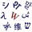

Collation
Collation is the assembly of written information into a standard order. Many systems of collation are based on numerical order or alphabetical order, or extensions and combinations thereof. Collation is a fundamental element of most office filing systems, library catalogs, and reference books.
Collation differs from classification in that classification is concerned with arranging information into logical categories, while collation is concerned with the ordering of items of information, usually based on the form of their identifiers. Formally speaking, a collation method typically defines a total order on a set of possible identifiers, called sort keys, which consequently produces a total preorder on the set of items of information (items with the same identifier are not placed in any defined order).
A collation algorithm such as the Unicode collation algorithm defines an order through the process of comparing two given character strings and deciding which should come before the other. When an order has been defined in this way, a sorting algorithm can be used to put a list of any number of items into that order.
The main advantage of collation is that it makes it fast and easy for a user to find an element in the list, or to confirm that it is absent from the list. In automatic systems this can be done using a binary search algorithm or interpolation search; manual searching may be performed using a roughly similar procedure, though this will often be done unconsciously. Other advantages are that one can easily find the first or last elements on the list (most likely to be useful in the case of numerically sorted data), or elements in a given range (useful again in the case of numerical data, and also with alphabetically ordered data when one may be sure of only the first few letters of the sought item or items).
Contents
Numerical and chronological order[edit]
Strings representing numbers may be sorted based on the values of the numbers that they represent. For example, "-4", "2.5", "10", "89", "30,000". Note that pure application of this method may provide only a partial ordering on the strings, since different strings can represent the same number (as with "2" and "2.0" or, when scientific notation is used, "2e3" and "2000").
A similar approach may be taken with strings representing dates or other items that can be ordered chronologically or in some other natural fashion.
Alphabetical order[edit]
Alphabetical order is the basis for many systems of collation where items of information are identified by strings consisting principally of letters from an alphabet. The ordering of the strings relies on the existence of a standard ordering for the letters of the alphabet in question. (The system is not limited to alphabets in the strict technical sense; languages that use a syllabary or abugida, for example Cherokee, can use the same ordering principle provided there is a set ordering for the symbols used.)
To decide which of two strings comes first in alphabetical order, initially their first letters are compared. The string whose first letter appears earlier in the alphabet comes first in alphabetical order. If the first letters are the same, then the second letters are compared, and so on, until the order is decided. (If one string runs out of letters to compare, then it is deemed to come first; for example, "cart" comes before "carthorse".) The result of arranging a set of strings in alphabetical order is that words with the same first letter are grouped together, and within such a group words with the same first two letters are grouped together, and so on.
Capital letters are typically treated as equivalent to their corresponding lowercase letters. (For alternative treatments in computerized systems, see Automated collation, below.)
Certain limitations, complications, and special conventions may apply when alphabetical order is used:
- When strings contain spaces or other word dividers, the decision must be taken whether to ignore these dividers or to treat them as symbols preceding all other letters of the alphabet. For example, if the first approach is taken then "car park" will come after "carbon" and "carp" (as it would if it were written "carpark"), whereas in the second approach "car park" will come before those two words. The first rule is used in many (but not all) dictionaries, the second in telephone directories (so that Wilson, Jim K appears with other people named Wilson, Jim and not after Wilson, Jimbo).
- Abbreviations may be treated as if they were spelt out in full. For example, names containing "St." (short for the English word Saint) are often ordered as if they were written out as "Saint". There is also a traditional convention in English that surnames beginning Mc and M' are listed as if those prefixes were written Mac.
- Strings that represent personal names will often be listed by alphabetical order of surname, even if the given name comes first. For example, Juan Hernandes and Brian O'Leary should be sorted as "Hernandes, Juan" and "O'Leary, Brian" even if they are not written this way.
- Very common initial words, such as The in English, are often ignored for sorting purposes. So The Shining would be sorted as just "Shining" or "Shining, The".
- When some of the strings contain numerals (or other non-letter characters), various approaches are possible. Sometimes such characters are treated as if they came before or after all the letters of the alphabet. Another method is for numbers to be sorted alphabetically as they would be spelled: for example 1776 would be sorted as if spelled out "seventeen seventy-six", and 24 heures du Mans as if spelled "vingt-quatre..." (French for "twenty-four"). When numerals or other symbols are used as special graphical forms of letters, as in 1337 for leet or Se7en for the movie title Seven, they may be sorted as if they were those letters.
- Languages have different conventions for treating modified letters and certain letter combinations. For example, in Spanish the letter ñ is treated as a basic letter following n, and the digraphs ch and ll were formerly (until 1994) treated as basic letters following c and l, although they are now alphabetized as two-letter combinations. A list of such conventions for various languages can be found at Alphabetical order § Language-specific conventions.
In several languages the rules have changed over time, and so older dictionaries may use a different order than modern ones. Furthermore, collation may depend on use. For example, German dictionaries and telephone directories use different approaches.
Radical-and-stroke sorting[edit]
- See also Indexing of Chinese characters
Another form of collation is radical-and-stroke sorting, used for non-alphabetic writing systems such as the hanzi of Chinese and the kanji of Japanese, whose thousands of symbols defy ordering by convention. In this system, common components of characters are identified; these are called radicals in Chinese and logographic systems derived from Chinese. Characters are then grouped by their primary radical, then ordered by number of pen strokes within radicals. When there is no obvious radical or more than one radical, convention governs which is used for collation. For example, the Chinese character 妈 (meaning "mother") is sorted as a six-stroke character under the three-stroke primary radical 女.
The radical-and-stroke system is cumbersome compared to an alphabetical system in which there are a few characters, all unambiguous. The choice of which components of a logograph comprise separate radicals and which radical is primary is not clear-cut. As a result, logographic languages often supplement radical-and-stroke ordering with alphabetic sorting of a phonetic conversion of the logographs. For example, the kanji word Tōkyō (東京) can be sorted as if it were spelled out in the Japanese characters of the hiragana syllabary as "to-u-ki-yo-u" (とうきょう), using the conventional sorting order for these characters.[citation needed]
In addition, in Greater China, surname stroke ordering is a convention in some official documents where people's names are listed without hierarchy.
The radical-and-stroke system, or some similar pattern-matching and stroke-counting method, was traditionally the only practical method for constructing dictionaries that someone could use to look up a logograph whose pronunciation was unknown. With the advent of computers, dictionary programs are now available that allow one to handwrite a character using a mouse or stylus.[citation needed]
Automated collation[edit]
When information is stored in digital systems, collation may become an automated process. It is then necessary to implement an appropriate collation algorithm that allows the information to be sorted in a satisfactory manner for the application in question. Often the aim will be to achieve an alphabetical or numerical ordering that follows the standard criteria as described in the preceding sections. However, not all of these criteria are easy to automate.[1]
The simplest kind of automated collation is based on the numerical codes of the symbols in a character set, such as ASCII coding (or any of its supersets such as Unicode), with the symbols being ordered in increasing numerical order of their codes, and this ordering being extended to strings in accordance with the basic principles of alphabetical ordering (mathematically speaking, lexicographical ordering). So a computer program might treat the characters a, b, C, d, and $ as being ordered $, C, a, b, d (the corresponding ASCII codes are $ = 36, a = 97, b = 98, C = 67, and d = 100). Therefore, strings beginning with C (or any other capital letter) would be sorted before strings with lower-case a, b, etc. This is sometimes called ASCIIbetical order. This deviates from the standard alphabetical order, particularly due to the ordering of capital letters before all lower-case ones (and possibly the treatment of spaces and other non-letter characters). It is therefore often applied with certain alterations, the most obvious being case conversion (often to uppercase, for historical reasons[note 1]) before comparison of ASCII values.
In many collation algorithms, the comparison is based not on the numerical codes of the characters, but with reference to the collating sequence – a sequence in which the characters are assumed to come for the purpose of collation – as well as other ordering rules appropriate to the given application. This can serve to apply the correct conventions used for alphabetical ordering in the language in question, dealing properly with differently cased letters, modified letters, digraphs, particular abbreviations, and so on, as mentioned above under Alphabetical order, and in detail in the Alphabetical order article. Such algorithms are potentially quite complex, possibly requiring several passes through the text.[2]
Problems are nonetheless still common when the algorithm has to encompass more than one language. For example, in German dictionaries the word ökonomisch comes between offenbar and olfaktorisch, while Turkish dictionaries treat o and ö as different letters, placing oyun before öbür.
A standard algorithm for collating any collection of strings composed of any standard Unicode symbols is the Unicode Collation Algorithm. This can be adapted to use the appropriate collation sequence for a given language by tailoring its default collation table. Several such tailorings are collected in Common Locale Data Repository.
Sort keys[edit]
In some applications, the strings by which items are collated may differ from the identifiers that are displayed. For example, The Shining might be sorted as Shining, The (see Alphabetical order above), but it may still be desired to display it as The Shining. In this case two sets of strings can be stored, one for display purposes, and another for collation purposes. Strings used for collation in this way are called sort keys.
Issues with numbers[edit]
Sometimes, it is desired to order text with embedded numbers using proper numerical order. For example, "Figure 7b" goes before "Figure 11a", even though '7' comes after '1' in Unicode. This can be extended to Roman numerals. This behavior is not particularly difficult to produce as long as only integers are to be sorted, although it can slow down sorting significantly. For example, Microsoft Windows does this when sorting file names.
Sorting decimals properly is a bit more difficult, because different locales use different symbols for a decimal point, and sometimes the same character used as a decimal point is also used as a separator, for example "Section 3.2.5". There is no universal answer for how to sort such strings; any rules are application dependent.
Ascending order of numbers differs from alphabetical order, e.g. 11 comes alphabetically before 2. This can be fixed with leading zeros: 02 comes alphabetically before 11. See e.g. ISO 8601.
Also −13 comes alphabetically after −12 although it is less. With negative numbers, to make ascending order correspond with alphabetical sorting, more drastic measures are needed such as adding a constant to all numbers to make them all positive.
Labeling of ordered items[edit]
In some contexts, numbers and letters are used not so much as a basis for establishing an ordering, but as a means of labeling items that are already ordered. For example, pages, sections, chapters, and the like, as well as the items of lists, are frequently "numbered" in this way. Labeling series that may be used include ordinary Arabic numerals (1, 2, 3, ...), Roman numerals (I, II, III, ... or i, ii, iii, ...), or letters (A, B, C, ... or a, b, c, ...). (An alternative method for indicating list items, without numbering them, is to use a bulleted list.)
When letters of an alphabet are used for this purpose of enumeration, there are certain language-specific conventions as to which letters are used. For example, the Russian letters Ъ and Ь (which in writing are only used for modifying the preceding consonant), and usually also Ы, Й, and Ё, are usually omitted. Also in many languages that use extended Latin script, the modified letters are often not used in enumeration.
See also[edit]
- Alphabetical order
- Asciibetical order
- Sorting
- Taxonomic sequence
- Mac and Mc together
- Unicode equivalence
- Natural sort order
Notes[edit]
References[edit]
- ^ M Programming: A Comprehensive Guide, Richard F. Walters, Digital Press, 1997
- ^ M Programming: A Comprehensive Guide, Richard F. Walters, Digital Press, 1997
External links and references[edit]
|  | Look up collation or alphabetization in Wiktionary, the free dictionary. |
{kind=link}
- Unicode Collation Algorithm: Unicode Technical Standard #10
- Collation in Spanish
- Collation of the names of the member states of the United Nations
- Typographical collation for many languages, as proposed in the List module of Cascading Style Sheets.
- Collation Charts: Charts demonstrating language-specific sorting orders in various operating systems and DBMS
- ICU Locale Explorer: An online demonstration of sorting in different languages that uses the Unicode Collation Algorithm with International Components for Unicode